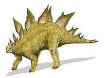
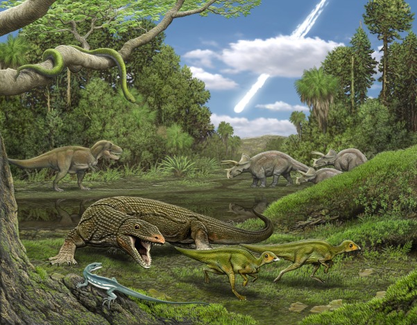
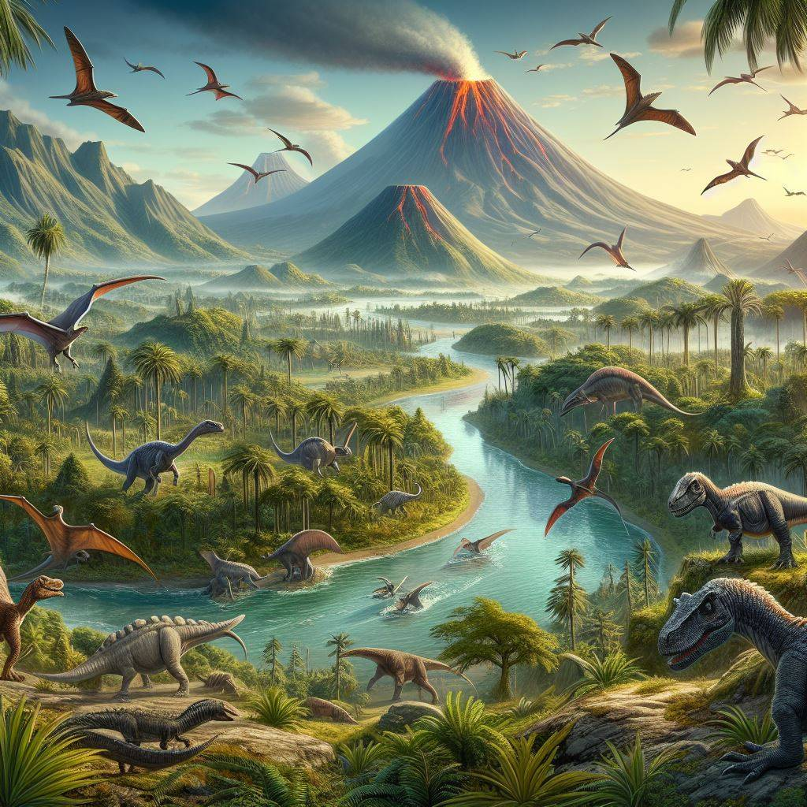

Mezozojska era - 250 do 65.5 miliona godina pre nove ere. Na početku mezozoika su svi kontinenti bili objedinjeni u prakontinet Pangeu, koja se delila na Laurziju na severu i Gondvanu na jugu. Tokom najvećeg dela tog perioda, klima na celoj planeti je bila topla i tropska, a plitka mora su pokrivala niže delove kopnene mase. Kopnom vladaju dinosaurusi, a morima razne vrste morskih gmizavaca, kao i amonitski i belemnitski mekušci, i mnogi drugi redovi beskičmenjaka, dok su vazduhom vladali pterosauri. Od biljaka nalazimo paprati i golosemenjače. Sisari su sitni i beznačajni, ali verovatno mnogobrojni. Mezozojska era je trajala preko 180 miliona godina. Osim organizama od kojih danas imamo samo fosile, u to vreme su se razvili i mnogi današnji oblici biljaka, beskičmenjaka i riba. Do kraja ere su se kontinenti uglavnom već podelili u poprimili svoj današnji oblik. Mezozoik se deli na tri perioda, koji su svi trajali milionima godina: trijas, juru i kredu. Za vreme trijasa su se pojavili mnogi današnji redovi beskičmenjaka, a među kopnenim gmizavcima su arhosauri zamenili terapside. U okeanima su ihtiosauri, kao npr. šonisaurus, narasli do veličine kitova. Jurski period predstavlja vrhunac dinosaurske ere, sa brahiosaurusom, stegosaurusom itd., dok su sisari bili sitni i uglavnom ličili na današnje rovčice. Na kopnu rastu biljke kao paprati, cikade, Bennettitales i četinari iz roda Cheirolepidiaceae. Tokom perioda krede su se javile prve cvetnice, povećao se broj vrsta ptica i riba, i pojavili novi tipovi dinosaura. Klima je postala hladnija, a na pojedinim kontinentima su se javile posebne vrste dinosaura. Mezozojska era se završila velikim pomorom vrsta koji se u nauci naziva K-T (kredno-tercijarni) događaj.
Trijas je bio prvi period mezozoika, koji je trajao od prije otprilike 252 do 201 milion godina. Početak trijasa obilježen je oporavkom života nakon masovnog izumiranja na kraju perma, koje je uništilo oko 90% svih morskih i kopnenih vrsta. Tokom ovog perioda, svi kontinenti su činili superkontinent poznat kao Pangea. Klima je bila uglavnom suha, s pustinjskim područjima, što je uticalo na razvoj života. Prvi dinosauri i rani sisavci pojavili su se u trijasu, dok su gmizavci dominirali na kopnu i u morima. Morski ekosistemi su bili naseljeni stvorenjima poput ihtiosaura i plesiosaura. Biljni svijet trijasa bio je pretežno sačinjen od golosemenki, poput četinara i cikasa, koje su se dobro prilagođavale sušnoj klimi.
Nakon trijasa uslijedio je period jure, koji je trajao od prije otprilike 201 do 145 miliona godina. Jura je često poznata kao "doba divovskih dinosaura". Tokom ovog perioda, Pangea se počela raspadati na manje kontinente, što je dovelo do promjena u klimatskim uslovima i stvorilo nove stanišne niše. Veliki biljojedi, poput brahiosaura i diplodokusa, bili su prisutni zajedno s grabežljivcima poput alosaura. U ovom periodu se pojavljuju prve ptice, poput arheopteriksa, koje su evoluirale iz malih mesoždernih dinosaura. Biljni svijet bio je bogat golosemenkama, papratima i čempresima, dok su cvjetnice počele postepeno da se razvijaju prema kraju jure.
Kreda je posljednji period mezozoika i trajala je od prije otprilike 145 do 66 miliona godina. Tokom krede, dinosauri su dosegnuli vrhunac raznolikosti, uključujući ikonike vrste kao što su tiranosaurus, triceratops i spinosaurus. U isto vrijeme, morem su dominirali mosasauri, plesiosauri i drugi veliki morski gmizavci. Kreda je također bila značajna zbog evolucije cvjetnica (angiospermi), koje su postale dominantna skupina biljaka na Zemlji, zahvaljujući sposobnosti brzog razmnožavanja i interakciji s insektima oprašivačima. Biljni svijet je značajno uticao na razvoj i širenje brojnih životinjskih vrsta.
Mezozoik je bio svjedok tektonskih promjena koje su oblikovale današnji izgled Zemlje. Kontinenti, nekada povezani u superkontinent Pangeu, počeli su se razdvajati, što je stvorilo različite klimatske uslove i omogućilo dalji razvoj izolovanih ekosistema. Ove promjene doprinijele su evoluciji vrsta prilagođenih specifičnim staništima.
Bogatstvo fosila iz ovog perioda daje nam jedinstvenu priliku za proučavanje prošlosti. Fosilni ostaci dinosaura, biljaka, morskih organizama i drugih bića omogućavaju paleontolozima da proučavaju kako su se organizmi razvijali, prilagođavali i kako je život reagovao na dramatične promjene u okruženju.
Tokom mezozoika, život u morima bio je izuzetno bogat i raznolik. Morski gmazovi, poput ihtiosaura, pleziosaura i mosasaura, postali su vodeći predatori okeana. Istovremeno, razni beskičmenjaci, poput amonita i belemnita, oblikovali su kompleksne morske ekosisteme. Ovi organizmi ostavili su iza sebe obilje fosilnih ostataka koji omogućavaju istraživanje evolucije i promjena u morskom životu.